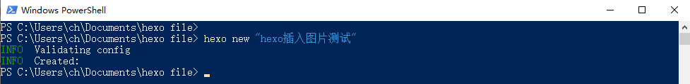
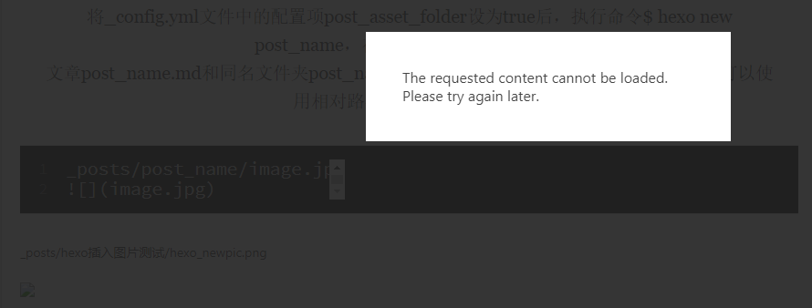

搞定了第一篇文章之后，自然是要解决插图的问题的，毕竟用处很多。
最简单的办法是直接全部丢到source目录/子目录中，然后使用绝对路径引用，不过这种显然只适合图很少的静态页面，要长期写文肯定还是分篇归档存储的好。
参考如下：
[hexo博客插入图片与视频方法 - 知乎 (zhihu.com)](https://zhuanlan.zhihu.com/p/104996801#:~:text=Hexo有多种图片插入方式，可以将图片存放在本地引用或者将图片放在CDN上引用。 当Hexo项目中只用到少量图片时，可以将图片统一放在source%2Fimages文件夹中，通过markdown语法访问它们。 source%2Fimages%2Fimage.jpg !,[ (可以写关于图片的描述)] (%2Fimages%2Fimage.jpg) 图片既可以在首页内容中访问到，也可以在文章正文中访问到。)
本地引用–相对路径
图片除了可以放在统一的images文件夹中，还可以放在文章自己的目录中。文章的目录可以通过配置_config.yml来生成。
2
post_asset_folder: true将_config.yml文件中的配置项post_asset_folder设为true后，执行命令$ hexo new post_name，在source/_posts中会生成
文章post_name.md和同名文件夹post_name。将图片资源放在post_name中，文章就可以使用相对路径引用图片资源了。
2

_posts/hexo插入图片测试/hexo_newpic.png

然后使用hexo s建立本地服务器测试，发现文章内显示正常了，而且_posts/hexo插入图片测试/hexo_newpic.png这一行貌似没有作用，且网站首页无法预览图片（如下图）。

让首页也能预览图片
1 | _posts/post_name/image.jpg |

ok，再次测试看效果，在首页和上面两张裂掉的图对比就很明显了。
修改图片大小
但是上面那张图撑满了整个显示区域，并且很难和正文区别开，试图把图片改小点以免看混==
1 | <div style="width:70%;margin:auto">{% asset_img image.png 图片信息描述 %}</div> |
在.md文件中写html。。。emmm感觉挺神奇的🤣
使用总结
ok基本到这正常写文已经不成问题了。还有种使用图床的方法没有测试。虽然不知道pages每个给了多大，但按库来算至少1G是有的，考虑到我大多数时候贴的都是些小截图，也不是什么美食摄影博主，应该一两年内是够用了。虽说应该要有预见性啥的，可是图床万一挂了也很麻烦，啥时候空间真不够用了再考虑别的折腾办法吧🤣🤣🤣